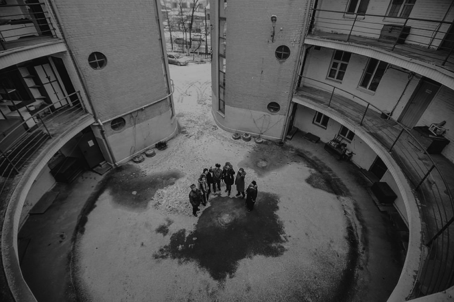

г. Таганрог, Александровская 107
«Круглый дом» построен в Таганроге в 1929 году по проекту архитектора Ивана Таранов-Белозёрова. Это был первый круглый дом, построенный в СССР. Этот жилой дом завода «Красный котельщик» символизирует коммуну: в те годы шли поиски варианта идеального жилого дома.
Поисковый характер проекта проявился и в конфигурации, и в планировочной структуре. Дом напоминает пчелиную соту: минимум строительного материала и максимум жесткости и прочности. Общий балкон; тесный, совершенно круглый двор; ванные, предназначенные для семи семей (потом были «захвачены» ближайшими к ним квартирами).
Дом был заселён к 7 ноября 1932 года. Общий туалет находился за пределами дома, метрах в 20 от него. Водопровод и канализация были оборудованы в квартирах дома только в начале 60-х годов.
Здание кирпичное, окна вытянутые; их ленточный характер подчеркивался темноватым колером простенков
Благодаря хорошей акустике дворового пространства, личная жизнь каждой семьи становится достоянием всей коммуны
Предполагалось построить еще три таких дома по этой улице, чтобы в плане можно прочитать знакомую аббревиатуру «СССР»
Долгие годы автором проекта Круглого дома считался некий архитектор Боголюбов. В 2000-х годах, когда интерес к архитектурным особенностям Круглого дома возрос, появилась информация о том, что автором проекта был известный ростовский архитектор М. Н. Кондратьев. Позднее, благодаря изысканиям ростовского историка архитектуры Артура Токарева, выяснилось, что автором проекта являлся известный архитектор Иван Таранов-Белозёров.
За 7 лет до выпуска этого номера, в 1929 году, проект был опубликован для обсуждения
К 80-летнему юбилею Круглого дома, случившемуся в октябре 2012 года, был проведён капитальный ремонт, а сам юбилей — отмечен праздником, проведённым во дворе жильцами дома.